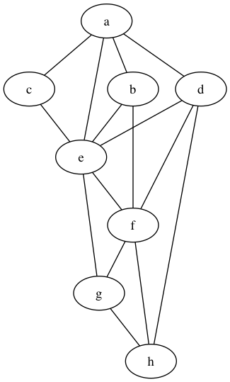
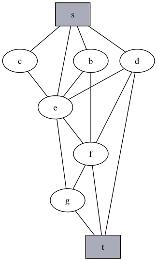
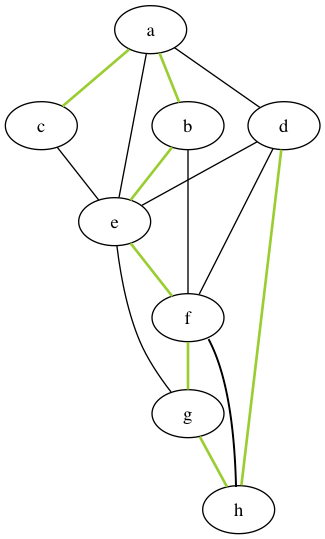
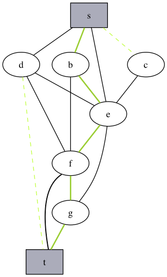
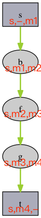
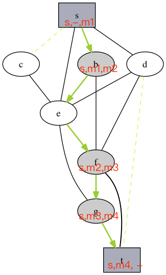
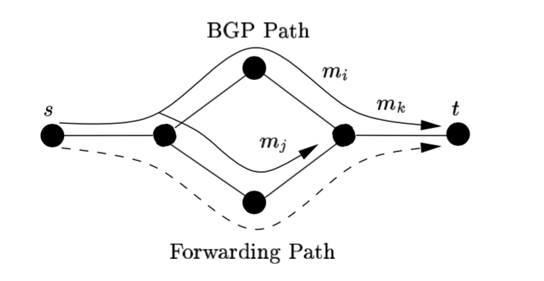
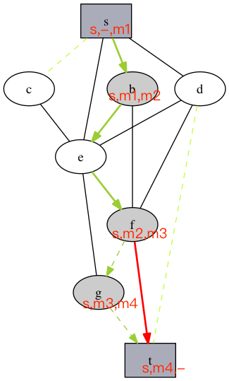
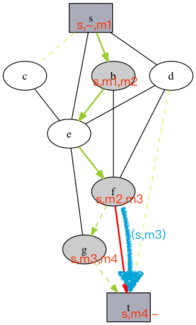
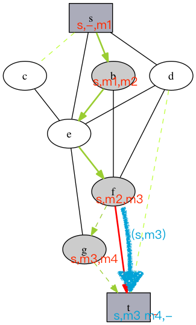

基于报文标记和流入表的 IP 源地址验证机制
下一代互联网-结题展示
计54 姚沛然 / 2015011315
Agenda
- 引言
- 相关工作
- 基于报文标记和流入表的 IP 源地址验证机制
- 优势分析
- 总结与展望
引言
DoS 等攻击常伪造 IP 源地址
开放的研究方向
研究者提出基于端到端与基于路径的方法
需要做到增量部署、能够缓解攻击
保证较高准确率，减少误判
相关工作
DPF
Distributed Packet Filtering
基本思想：路由器通过相互交换信息，确定数据包流入的合法方向。路由时，过滤掉从不合法方向流入的数据包。
问题：如何确定合法方向？
IDPF
Inter-Domain Packet Filters
从 BGP 报文中隐式推断 AS 之间的等级关系，确定所有可行的道路
合法报文：从可行道路流入的报文
BASE
BGP Anti-Spoofing Extension
假设：合法转发路径就是 BGP 报文传播路径
标记经过路由器的 IP 报文，通过标记判断来源方向
通过 BGP 报文确定合法报文应有的标记
在增量部署的情况下都可以取得很好的效果
问题
IDPF 假定路由器遵循一定的规则
BASE 假设合法转发路径就是 BGP 报文传播路径
实际网络中常有不满足假设的情况
方向
考虑实际网络中不满足假设的情况，改进上述方法
基于报文标记和流入表的 IP 源地址验证机制
要点
- 报文标记和过滤
- 流入表（incoming table）
基于报文标记和过滤的 IP 源地址验证机制
BASE 的基本思想
AS 连接关系图
报文从s传输到t
s的BGP树：目的地是s的最优路径构成的生成树
在BGP树上，s与t之间存在唯一道路（BGP道路）
BGP道路上部署了BASE的路由器（假设只有b和f）构成了BGP道路的一个子道路

BGP道路上部署了BASE的路由器（假设只有b和f）构成了BGP道路的一个子道路p

假设：s到t之间，合法报文经过的路径就是BGP道路
每个部署 BASE 的路由器具有私钥，利用私钥按顺序为道路p上的路由器进行标记
从s到t的数据包经过部署BASE的路由器时，路由器检查报文上的标记，并重新进行标记
优势
不需要完整部署也能起到效果
问题
由于负载均衡、AS间转发策略、网络故障等原因，互联网拓扑中常存在不对等
约65%的AS间网络存在不对等
问题
互联网拓扑中常存在不对等
改进思路
引入流入表（incoming table）
流入表最早在SAVE(Source Address Validity Enforcement Protocol)中提出
将源地址空间与来源方向对应
具体实现
部署 BASE 的路由器向转发表中的目的地广播(s,m)
广播时间：BGP update 时、周期性地
利用接收到的广播更新过滤规则
评估和总结
基于报文标记和流入表的IP源地址验证机制
优势
- 部分部署即可发挥效果
- 在部分非对称网络下也有效
- 减少假阳性
问题
- 不完全部署情况下，并非在所有非对称网络都有效
- 增加网络负荷
未来工作
- 通过模拟，验证可用性
- 测量对网络负荷的影响
- 与IDPF+SAVE等方案进行效果对比
参考文献
[1] S. M. Bellovin. Security problems in the TCP/IP protocol suite[J]. SIGCOMM Comput. Commun. Rev, 1989, vol.19, no.2: pp. 32-48
[2] T. Ehrenkranz, J. Li. On the State of IP Spoofing Defense[J]. ACM Trans. Internet Technol. 2009, 9, 2, Article 6, 29 pages.
[3]Ehrenkranz T, Li J. An incrementally deployable protocol for learning the valid incoming direction of IP packets[J]. University of Oregon, Tech. Rep, 2007.
[4] Lee H, Kwon M, Hasker G, et al. BASE: An incrementally deployable mechanism for viable IP spoofing prevention[C]//Proceedings of the 2nd ACM symposium on Information, computer and communications security. ACM, 2007: 20-31.
[5]Li J, Mirkovic J, Wang M, et al. SAVE: Source address validity enforcement protocol[C]//INFOCOM 2002. Twenty-First Annual Joint Conference of the IEEE Computer and Communications Societies. Proceedings. IEEE. IEEE, 2002, 3: 1557-1566.